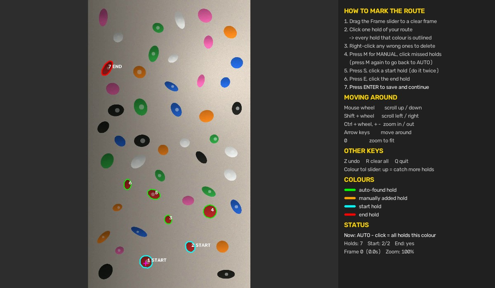
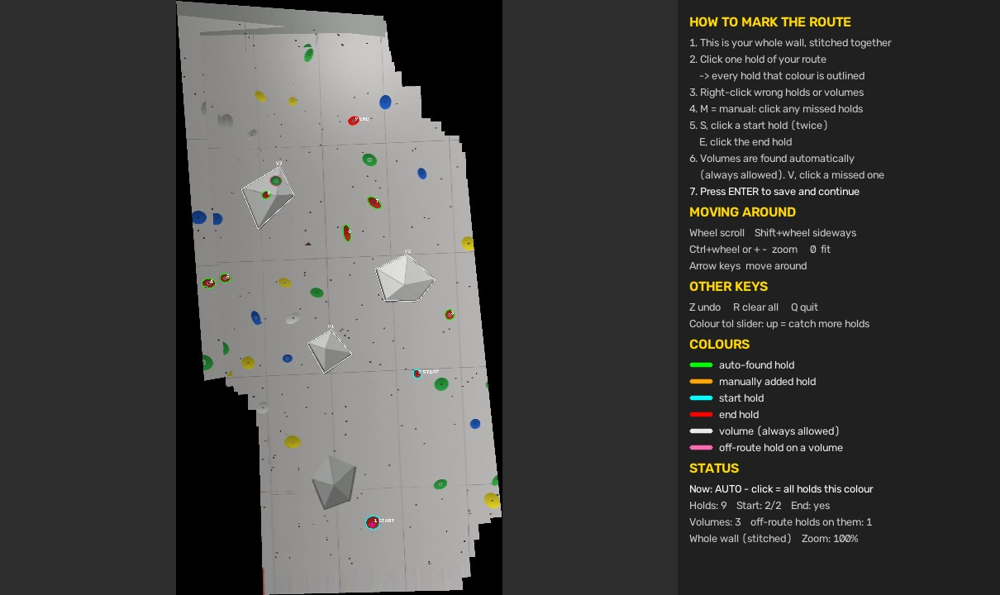

Climbers film their attempts to figure out their "beta" (the moves that get you up a route). BetaVision takes that shaky phone video and turns it into an annotated breakdown of the climb.
Mark the holds once and you get back a video with:
- a skeleton tracking your whole body
- every hold on the route outlined and numbered
- holds lighting up when you're on them
- sticky notes like "heel hook" popping up at the right moment
- a CONGRATULATIONS banner when you match the top
Finding holds in one click
Gym routes are colour-coded, so you click one hold and it grabs every hold of that colour. Gym lighting is all over the place, so I flatten it first and compare colours in CIELAB, which is closer to how your eyes see colour.
Grey, white and black holds basically blend into the wall, so those get found by shape instead. Anything it still misses, you can just click in yourself.

Volumes
Volumes (the big geometric blocks) get picked up from their straight edges. It follows real gym rules too: neutral volumes count for every route, coloured ones only if they match, and off-route holds bolted onto a volume get cut out.
Keeping up with a handheld camera
Whoever's filming is panning and zooming the whole time, so outlines drawn on the first frame would slide off the holds within seconds. BetaVision tracks the camera frame to frame (optical flow + homographies) and re-anchors itself with ORB feature matching every so often so small errors don't pile up. The outlines stay stuck to their holds.
Bonus: it stitches the frames into one panorama of the wall. Each pixel is the median across frames, so the climber just vanishes, and you can mark a tall route all in one go.

The rest
Body tracking is MediaPipe Pose, trimmed to the 16 joints that matter for climbing. Each hand and foot snaps to the nearest hold, which is how it knows what to light up, and you can export it all to a CSV.
I didn't want anyone to need a terminal, so it's wrapped in a little local web app (FastAPI + a browser hold picker). On Windows it's a double-click, and nothing leaves your computer.
Does it work?
I use it on my own climbs, and I tested it properly on 16 synthetic walls with bad lighting, chalk, seams and bolt holes:
All numbers are on synthetic test walls.
Built solo with Python, OpenCV, MediaPipe, FastAPI and JavaScript. It's open source (MIT).